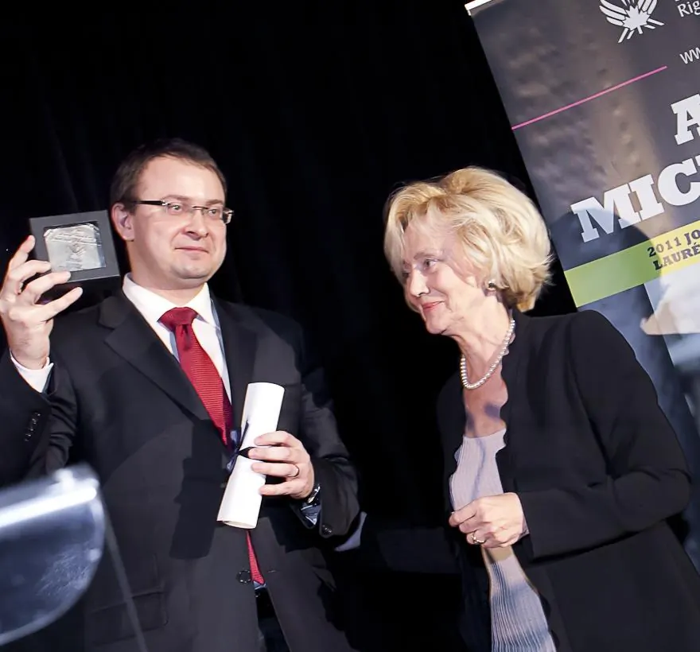

Ігар Доўгаль
Права бежанцаў і пытанні экстрадыцыі.
Асабісты досвед Алеся Міхалевіча вызначыў профіль бюро. Трансгранічныя справы закранаюць розныя галіны права, таму да працы далучаюцца юрысты адпаведных спецыялізацый.

Алесь Міхалевіч
Алесь — юрыст па адукацыі. У 2010 годзе ён быў кандыдатам у прэзідэнты Беларусі, пасля выбараў стаў абвінавачаным па справе аб масавых беспарадках і быў вымушаны выехаць у Еўропу. Там яго неаднаразова затрымлівалі ў сувязі з міжнародным вышукам, нягледзячы на атрыманы ў Чэхіі палітычны прытулак.
Да ліпеня 2012 года звесткі пра яго былі выдаленыя з файлаў Інтэрпола. У 2015 годзе ён змог вярнуцца ў Беларусь; вышук быў спынены. Гэты досвед лёг у аснову працы бюро з людзьмі, якія сутыкнуліся з неабгрунтаваным або палітычна матываваным міжнародным пераследам.
Алесь стварыў і ўзначальвае бюро, супрацоўнічае з праваабарончымі арганізацыямі і дапамагае выбудоўваць абарону па справах аб вышуку і экстрадыцыі.
Бюро
Справа можа адначасова датычыцца вышуку, экстрадыцыі, прытулку і міграцыйнага статусу. Таму разам з Алесем над такімі задачамі працуюць юрысты розных профіляў. Першая размова з менеджарам дапамагае вызначыць, з кім абмеркаваць абставіны справы.
Зараз у бюро працуюць 11 чалавек: чатыры партнёры, чатыры юрысты і тры супрацоўнікі, якія забяспечваюць юрыдычную і адміністрацыйную падтрымку.
Калі сітуацыя закранае некалькі краін, бюро можа дадаткова ўзаемадзейнічаць з юрыстамі і праваабаронцамі на месцах. Прадстаўніцтва ў нацыянальным судзе вядзе спецыяліст, які мае права практыкаваць у адпаведнай краіне.
Напрамкі працы →Права бежанцаў і пытанні экстрадыцыі.
Узаемадзеянне з Інтэрполам.
Міграцыйныя пытанні.
Пачаць можна з кароткага апісання справы. Менеджар дапаможа вызначыць, хто зможа абмеркаваць яе з вамі па сутнасці.